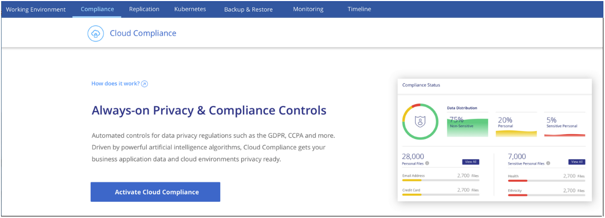
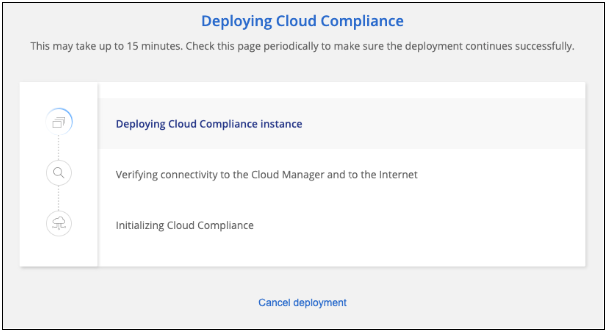
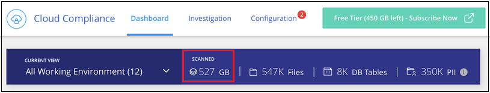
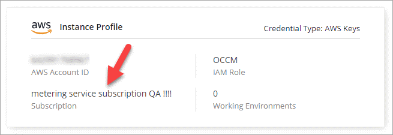
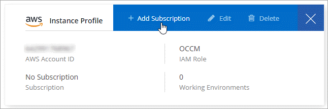

ドキュメントの変更をリクエスト
ドキュメントの変更をリクエスト GitHub で編集
GitHub で編集 寄稿者向けガイド
寄稿者向けガイドCloud Compliance の導入
Cloud Manager のワークスペースに Cloud Compliance インスタンスを導入するには、いくつかの手順を実行します。
クイックスタート
これらの手順を実行してすぐに作業を開始するか、残りのセクションまでスクロールして詳細を確認してください。
コネクタを作成します
コネクタがない場合は、 Azure または AWS でコネクタを作成します。を参照してください "AWS でコネクタを作成する" または "Azure でコネクタを作成する"。
前提条件を確認する
クラウド環境が前提条件を満たしていることを確認します。これには、クラウドコンプライアンスインスタンス用の vCPU 16 個、インスタンス用のアウトバウンドインターネットアクセス、ポート 80 経由のコネクタとクラウドコンプライアンスの接続などが含まれます。 すべてのリストを参照してください。
Cloud Compliance の導入
インストールウィザードを起動して、 Cloud Manager に Cloud Compliance インスタンスを導入します。
Cloud Compliance サービスに登録
Cloud Compliance が Cloud Manager でスキャンする最初の 1TB のデータは無料です。その後もデータのスキャンを続行するには、 AWS または Azure Marketplace へのサブスクリプションが必要です。
コネクタを作成しています
コネクタがない場合は、 Azure または AWS でコネクタを作成します。を参照してください "AWS でコネクタを作成する" または "Azure でコネクタを作成する"。ほとんどの場合、コネクタセットがあります Cloud Compliance をアクティブ化するのは、ほとんどの場合です "Cloud Manager の機能にはコネクタが必要です"ただし、ここで設定する必要がある場合もあります。
AWS または Azure で Cloud Compliance 用のコネクタを使用する必要があるシナリオがいくつかあります。
-
AWS または AWS S3 バケット内の Cloud Volumes ONTAP のデータをスキャンするときは、 AWS のコネクタを使用します。
-
Azure または Azure NetApp Files で Cloud Volumes ONTAP 内のデータをスキャンする場合は、 Azure のコネクタを使用します。
-
どちらのコネクタでもデータベースをスキャンできます。
ご覧のように、を使用する必要がある状況もあります "複数のコネクタ"。

|
Azure NetApp Files のスキャンを計画している場合は、スキャンするボリュームと同じ領域に導入していることを確認する必要があります。 |
前提条件の確認
Cloud Compliance を導入する前に、次の前提条件を確認し、サポートされている構成であることを確認してください。
- アウトバウンドインターネットアクセスを有効にします
-
Cloud Compliance にはアウトバウンドのインターネットアクセスが必要です。仮想ネットワークでインターネットアクセスにプロキシサーバを使用している場合は、 Cloud Compliance インスタンスがアウトバウンドのインターネットアクセスを使用して次のエンドポイントに接続していることを確認します。Cloud Manager は、コネクタと同じサブネットに Cloud Compliance インスタンスを導入します。
エンドポイント 目的 Cloud Central アカウントを含む Cloud Manager サービスとの通信。
¥ https://netapp-cloud-account.auth0.com ¥ https://auth0.com
NetApp Cloud Central との通信により、ユーザ認証を一元的に行うことができます。
https://cloud-compliance-support-netapp.s3.us-west-2.amazonaws.com \ https://hub.docker.com \ https://auth.docker.io \ https://registry-1.docker.io \ https://index.docker.io/ \ https://dseasb33srnrn.cloudfront.net/ \ https://production.cloudflare.docker.com/
ソフトウェアイメージ、マニフェスト、およびテンプレートにアクセスできます。
ネットアップが監査レコードからデータをストリーミングできるようにします。
¥ https://cognito-idp.us-east-1.amazonaws.com ¥ https://cognito-identity.us-east-1.amazonaws.com
Cloud Compliance でマニフェストとテンプレートにアクセスしてダウンロードしたり、ログと指標を送信したりできます。
- Cloud Manager に必要な権限が割り当てられていることを確認します
-
Cloud Manager に、リソースを導入する権限と Cloud Compliance インスタンスのセキュリティグループを作成する権限があることを確認します。最新の Cloud Manager 権限は、で確認できます "ネットアップが提供するポリシー"。
- vCPU の制限を確認してください
-
クラウドプロバイダの vCPU 制限によって、 16 コアのインスタンスの導入が許可されていることを確認してください。Cloud Manager が実行されているリージョン内の関連するインスタンスファミリーの vCPU 制限を確認する必要があります。
AWS では、インスタンスファミリーは On-Demand Standard Instances です。Azure では ' インスタンスファミリーは _Standard DSView3 Family _ です
vCPU の制限の詳細については、以下を参照してください。
- Cloud Manager から Cloud Compliance にアクセスできることを確認
-
コネクタと Cloud Compliance インスタンスの間の接続を確認します。コネクタのセキュリティグループは、 Cloud Compliance インスタンスとの間のポート 80 経由のインバウンドおよびアウトバウンドトラフィックを許可する必要があります。
この接続により、 Cloud Compliance インスタンスの導入が可能になり、コンプライアンスタブに情報を表示できます。
- Azure NetApp Files の検出を設定します
-
ボリュームをスキャンして Azure NetApp Files をスキャンする前に、 "構成を検出するには、 Cloud Manager が設定されている必要があります"。
- Cloud Compliance の運用を継続できることを確認します
-
データを継続的にスキャンするには、 Cloud Compliance インスタンスをオンのままにする必要があります。
- Web ブラウザから Cloud Compliance への接続を確認します
-
Cloud Compliance を有効にしたら、ユーザが Cloud Compliance インスタンスに接続しているホストから Cloud Manager のインターフェイスにアクセスするようにします。
Cloud Compliance インスタンスは、プライベート IP アドレスを使用して、インデックス付きデータがインターネットにアクセスできないようにします。そのため、 Cloud Manager へのアクセスに使用する Web ブラウザは、そのプライベート IP アドレスに接続する必要があります。この接続は、 AWS または Azure への直接接続（ VPN など）、または Cloud Compliance インスタンスと同じネットワーク内にあるホストから確立できます。
Cloud Compliance インスタンスの導入
Cloud Manager インスタンスごとに Cloud Compliance のインスタンスを導入します。
-
Cloud Manager で、 * Cloud Compliance * をクリックします。
-
クラウドコンプライアンスのアクティブ化 * をクリックして、導入ウィザードを開始します。

-
導入手順が完了すると、ウィザードに進捗状況が表示されます。問題が発生すると停止し、入力を求められます。

-
インスタンスが展開されたら、 * 設定に進む * をクリックして _ スキャン設定 _ ページに移動します。
Cloud Manager によってクラウドプロバイダに Cloud Compliance インスタンスが導入されます。
スキャン設定ページから、コンプライアンスのためにスキャンする作業環境、ボリューム、およびバケットを選択できます。特定のデータベーススキーマをスキャンするために、データベースサーバに接続することもできます。これらのデータソースのいずれかで Cloud Compliance をアクティブ化します。
Cloud Compliance サービスへの登録
Cloud Compliance が Cloud Manager ワークスペースでスキャンする最初の 1TB のデータは無料です。その後もデータのスキャンを続行するには、 AWS または Azure Marketplace へのサブスクリプションが必要です。
いつでもサブスクライブでき、データ量が 1TB を超えるまでは料金は発生しません。Cloud Compliance Dashboard でスキャンしているデータの総容量を常に確認できます。また、 [ 今すぐサブスクライブ ] ボタンを使用すると、準備が整ったときに簡単にサブスクライブできます。

-
注： * Cloud Compliance から登録を求められたものの、すでに Azure サブスクリプションをお持ちの場合は、古い * Cloud Manager * サブスクリプションを使用している可能性があるため、新しい * NetApp Cloud Manager * サブスクリプションに変更する必要があります。を参照してくださいAzure で新しい NetApp Cloud Manager プランに変更 を参照してください。
これらの手順は、 _Account Admin_role 権限を持つユーザが実行する必要があります。
-
Cloud Manager コンソールの右上にある設定アイコンをクリックし、 * クレデンシャル * を選択します。

-
AWS インスタンスプロファイルまたは Azure Managed Service Identity のクレデンシャルを検索します。
サブスクリプションは、インスタンスプロファイルまたはマネージドサービス ID に追加する必要があります。充電ができない。
すでに月額プランをお持ちの場合は、すべて設定されています。他に必要なことはありません。

-
まだサブスクリプションをお持ちでない場合は、クレデンシャルの上にカーソルを合わせて、操作メニューをクリックします。
-
[ サブスクリプションの追加 ] をクリックします。

-
[ サブスクリプションの追加 ] をクリックし、 [* 続行 ] をクリックして、手順に従います。
次のビデオでは、 Marketplace サブスクリプションを AWS サブスクリプションに関連付ける方法を紹介します。
次のビデオでは、 Marketplace サブスクリプションを Azure サブスクリプションに関連付ける方法を紹介します。
Azure で新しい Cloud Manager プランに変更
2020 年 10 月 7 日より、 Azure Marketplace サブスクリプション「 NetApp Cloud Manager * 」に Cloud Compliance が追加されました。元の Azure * Cloud Manager * サブスクリプションをすでにお持ちの場合、 Cloud Compliance の使用は許可されません。
以下の手順に従って、新しい * NetApp Cloud Manager * サブスクリプションを選択し、古い * Cloud Manager * サブスクリプションを削除する必要があります。
|
|
既存のサブスクリプションに特別なプライベートオファーが付随して発行された場合、ネットアップに連絡して、コンプライアンスを含む新しい特別なプライベートオファーを発行できるようにする必要があります。 |
これらの手順は、前述のように新しいサブスクリプションを追加するのと似ていますが、いくつかの場所で異なります。
-
Cloud Manager コンソールの右上にある設定アイコンをクリックし、 * クレデンシャル * を選択します。
-
サブスクリプションを変更する Azure Managed Service Identity のクレデンシャルを検索し、クレデンシャルにカーソルを合わせて、 * Associate Subscription * をクリックします。
現在の Marketplace サブスクリプションの詳細が表示されます。
-
[ サブスクリプションの追加 ] をクリックし、 [* 続行 ] をクリックして、手順に従います。新しいサブスクリプションを作成するために、 Azure ポータルにリダイレクトされます。
-
Cloud Manager * ではなく、 Cloud Compliance へのアクセスを提供するプラン * NetApp Cloud Manager * を選択してください。
-
ビデオの手順に従って、 Marketplace サブスクリプションを Azure サブスクリプションに関連付ける：
-
Cloud Manager に戻り、新しいサブスクリプションを選択し、 * Associate * をクリックします。
-
サブスクリプションが変更されたことを確認するには、資格情報カードで上のサブスクリプションの上にカーソルを置きます。
これで、 Azure ポータルから古いサブスクリプションのサブスクリプションを解除できます。
-
Azure ポータルで、 Software as a Service （ SaaS ）に移動し、サブスクリプションを選択して、 * Unsubscribe * をクリックします。